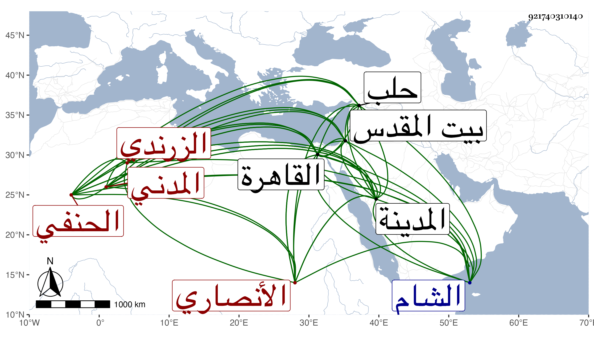

0902Sakhawi.DawLamic.ITO20230111-ara1.EIS1600.921740310140
Biography ID: 921740310140
228
محمد بن عبد الله بن محمد بن عبد الوهاب بن علي بن يوسف المجد بن الجمال بن فتح الدين الأنصاري الزرندي المدني الحنفي الماضي أبوه وهو أكبر إخوته ، ابن عم قاضي الحنفية بها علي بن سعيد . ولد في أول سنة اثنتين وخمسين وثمانمائة بالمدينة ونشأ بها فحفظ القرآن وألفية النحو وبعض المنار ، وعرض على عمه سعيد وبه تفقه وعلى الشهاب الأبشيطي وحضر عنده في العربية وكذا أخذ في الفقه أيضا ببلده عن الفخر عثمان الطرابلسي وفي النحو أيضا والمنطق عن أحمد بن يونس وفي القراآت عن عمر النجار وعبد الرحمن الششتري ، وارتحل إلى القاهرة في سنة أربع وسبعين فأخذ في الفقه وغيره عن الأمين الأقصرائي بل قرأ عليه سنن ابن ماجه وسمع عليه غير ذلك وكذا قرأ على المحب بن الشحنة وغيره وسافر منها إلى الشام في التي بعدها فقرأ على الزين خطاب والخيضري في البخاري وغيره ، ودخل حلب وزار بيت المقدس مرتين ولما كنت مجاورا بالمدينة سمع مني وعلى أشياء ، وقدم بعد ذلك القاهرة أيضا في ذي الحجة سنة إحدى وتسعين فقرأ على بعض البخاري وسمع على غير ذلك وأخذ حينئذ عن النظام الحنفي في الفقه وأصوله وكذا عن الصلاح الطرابلسي وأبي الخير بن الرومي وتميز في الفقه وشارك في غيره وله نظم ، ودرس بالمسجد النبوي بعد الأذن له في ذلك مع عقل وسكون وانجماع ، وصاهره يحيى بن شيخه الفخر الطرابلسي على ابنته ووجهه للاشتغال .
